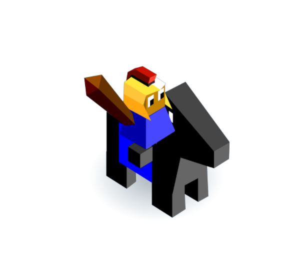
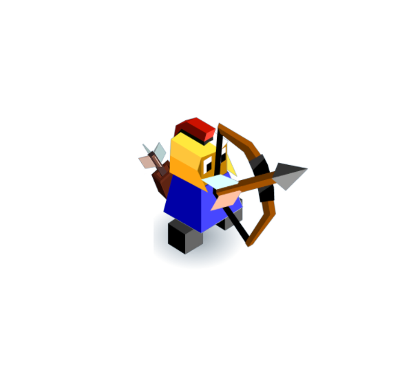
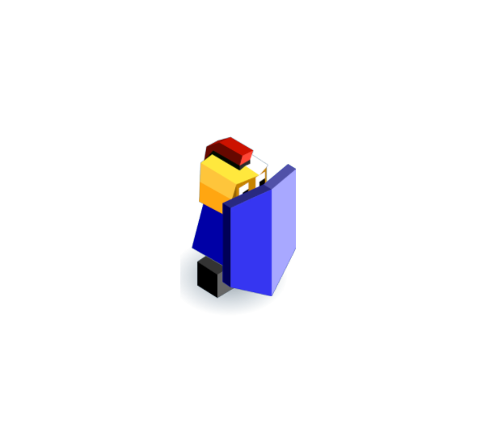
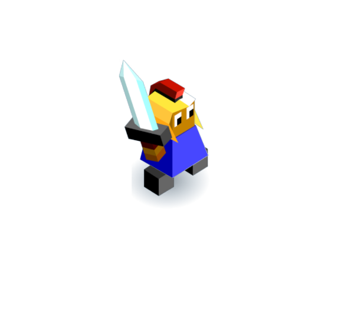
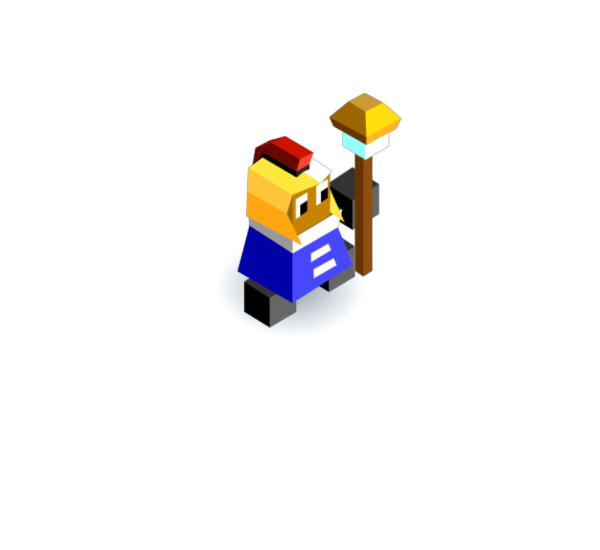
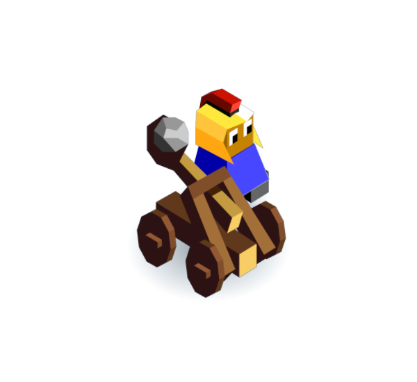
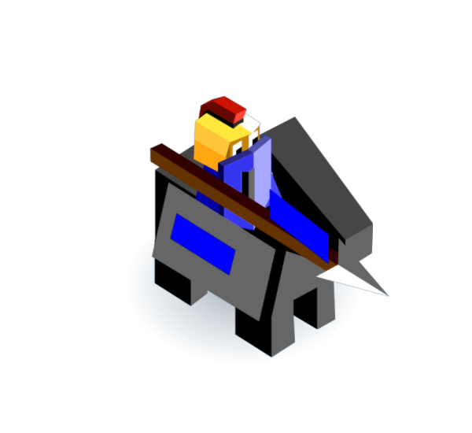
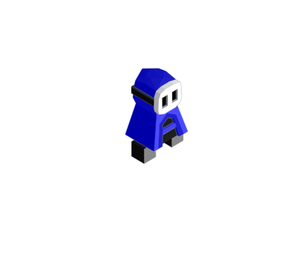
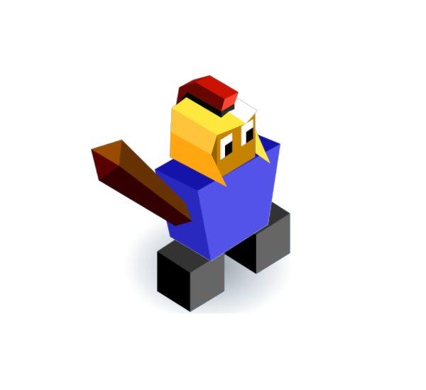
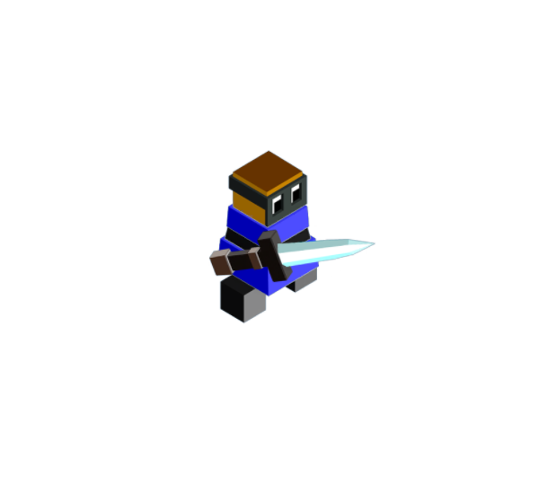

Unofficial unit strategy guide for

The Unofficial guide to unit stats
In The Battle of Polytopia, each type of unit has a specific function and role. But what truly makes each unit unique is its stats and abilities (you can find this by clicking the unit, then clicking the "i" symbol).
The stat categories are health, Attack, Defence, Movment, and Range.
Every unit has at least one attribute, attributes let the unit do things other units can't. attributes are equally as important as how much Health and Attack they have.
Atributes are:
Dash:
Allows the unit to attack and moove on the same turn instead of one or the other.
Fortify
Give the unit a defense bonus of 1.5 when in a city, and a defense bonse of x2 in a walled city.
Escape:
Lets a unit move, attack and and then move again, giving the unit high mobility.
Stiff:
If a units that gets attacked has this attribute, then it can't deal out retaliation damage.
Heal:
Heals all Surrounding units, only MindBenders have this attribute.
Persist:
A unit with this attribute can keep attacking as long as it has killed the last unit it has attacked
Infiltrate:
When a unit with this attribute attacks a city, they steal the stars that city would have made in the next round. On top of that you get a special unit called a Dagger. The number of daggers you get is equal to the level of city.
Scout
Gives the unit double vision, this allows the unit to explore faster
Creep
This unit cannot be boosted by roads, but does not take movment penalties going through rough terrain.
Hide:
This unit cannot be seen normally by the enemy like other units but if it goes next to an enemy unit, that unit will have a little eye next to it shouwing that somthing is there. If and enemy unit tries to go on the square the hiding unit is on, it will reveal that unit for the round.
Surprise:
When a unit with this attribute attack another unit, it takes no retaliation damage.
Static
Units with this attribute cannot become a veteran.
Independent:
Units with this attribute do not belong to any city and don't take up the amount of units a city can train.
Appearance: is when you most commonly see the unit during a game.
Cost: how many stars the unit costs to train.
Trainable land units:
Warrior:
Health: 10
Attack: 2
Defense: 2
Movment: 1
Range: 1
Attributes: Dash, Fortify
Cost: 2 stars
Appearance: early - middle game


Rider:
Health: 10
Attack: 2
Defense: 1
Movment: 2
Range: 1
Attributes: Dash, Fortify, Escape
Cost: 3 stars
Appearance: early - middle game
Archer:
Health: 10
Attack: 2
Defense: 1
Movment: 1
Range: 2
Attributes: Dash, Fortify
Cost: 3 stars
Appearance: early - middle game


Defender:
Health: 15
Attack: 1
Defense: 3
Movment: 1
Range: 1
Attributes: Fortify
Cost: 3 stars
Appearance: middle - end game
Swordsmen:
Health: 15
Attack: 3
Defense: 3
Movment: 1
Range: 1
Attributes: Dash
Cost: 5 stars
Appearance: middle – late game


Mindbender:
Health: 10
Attack: 0
Defense: 2
Movment: 1
Range: 1
Attributes: Heal, Convert, Stiff
Cost: 5 stars
Appearance: middle - late game
Catapult:
Health: 10
Attack: 4
Defense: 0
Movment: 1
Range: 3
Attributes: Stiff
Cost: 8 stars
Appearance: middle - late game


Knight:
Health: 10
Attack: 4
Defense: 1
Movment: 3
Range: 1
Attributes: Dash, Persist, Fortifiy
Cost: 8 stars
Appearance: late game
Cloak:
Health: 5
Attack: 0
Defense: 0.5
Movment: 2
Range: 1
Attributes: Dash, Infiltrate, Sneak, Hide, Creep
Cost: 8 stars
Appearance: late game

Non trainable land units

Giant:
Health: 40
Attack: 4
Defense: 4
Movment: 1
Range: 1
Attributes: Static
How to get: through uprgrading citys to level 5
Worth: 10 stars
Appearance: middle - late game
Dagger:
Health: 10
Attack: 2
Defense: 2
Movment: 1
Range: 1
Attributes: Dash, Surprise, Independent, Static
How to get: through attacking a city with a cloak
Worth: 2 star
Appearance: late game

Hopefully this page has answered all your questions about units and what their attributes are.
If you want to learn about how to use them in formations, please check out my strategies page.